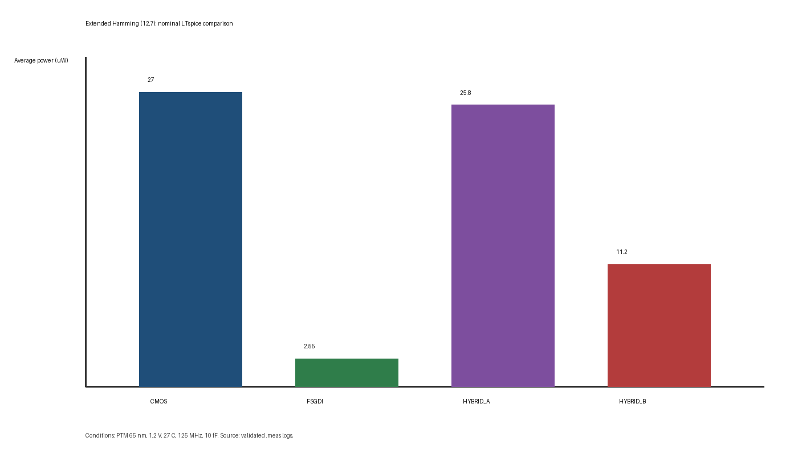
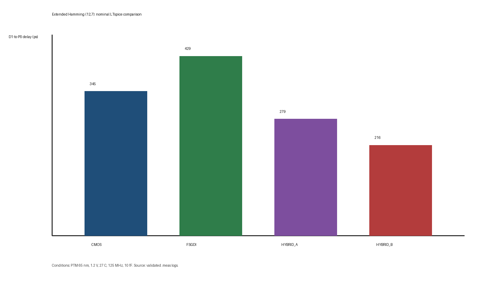
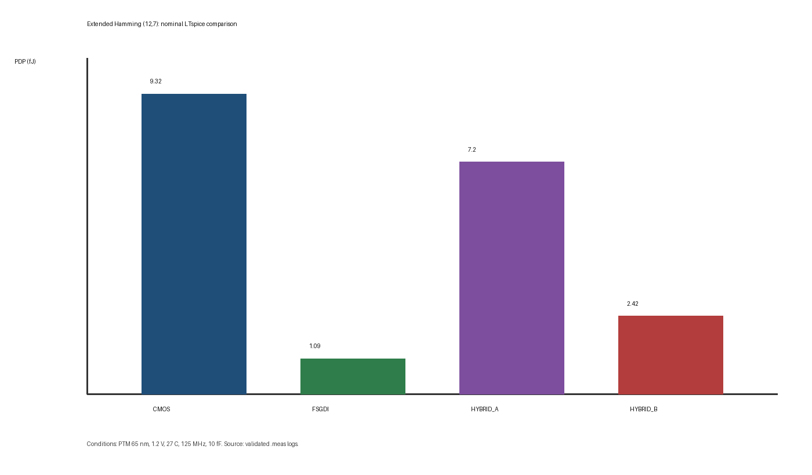

Evidence boundary: these are LTspice results using a predictive 65-nm model. They are not measured silicon, post-layout extraction, or foundry sign-off.
Nominal extended Hamming comparison
| Architecture | Power (µW) | D1→P0 delay (ps) | PDP (fJ) | Transistors |
|---|---|---|---|---|
| CMOS | 27.024 | 344.947 | 9.322 | 264 |
| FS-GDI | 2.590 | 429.062 | 1.094 | 132 |
| Hybrid-A | 25.947 | 276.783 | 7.205 | 220 |
| Hybrid-B | 11.203 | 215.846 | 2.418 | 152 |
Relative to CMOS, Hybrid-B improves nominal power by 58.54%, delay by 37.43%, PDP by 74.06%, and transistor count by 42.42%. FS-GDI nevertheless remains the lowest-power and lowest-PDP option; Hybrid-B is supported as a speed-oriented, externally restored compromise.



Robustness and quality control
The corpus includes independent voltage, temperature, frequency, and load sweeps. All architectures passed the selected criteria at 0.6 V in the tested 10 fF sweep, so no minimum operating voltage below 0.6 V is claimed. Three 1 fF runs were rejected because overshoot exceeded the configured ±5% supply-bound tolerance; their logs remain available for audit.